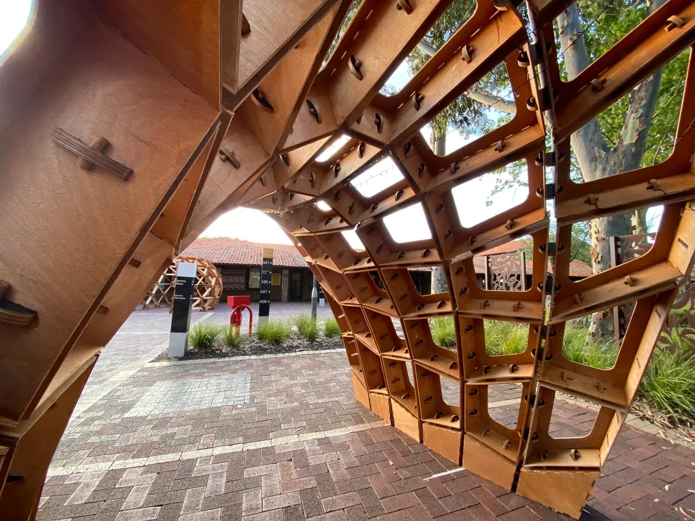
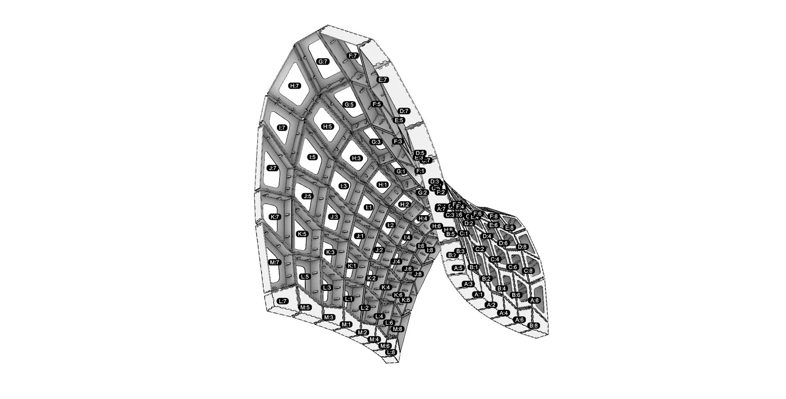
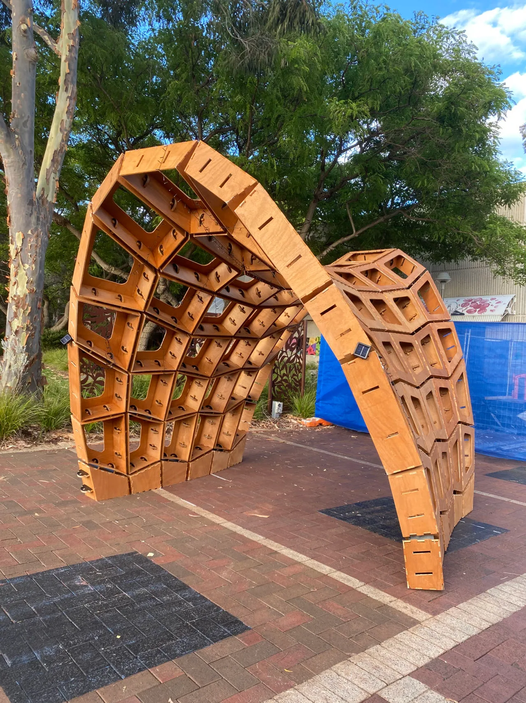

Timber Plate Pavilion Curtin University
This timber pavilion was developed as part of Curtin University’s postgraduate architecture program, with a focus on 3D modelling and computational design. Using the Grasshopper visual scripting environment, students explored parametric modelling techniques and developed a series of digitally fabricated prototypes into a full-scale installation.
The structure comprises 9 mm-thick plywood plates, pre-cut using a CNC router and assembled with friction-fit connections. Its compression-shell geometry creates an efficient structural form while maintaining a remarkably thin profile without internal framing. The modular system consists of a series of prefabricated arches joined in a linear sequence, allowing the pavilion to be scaled and adapted to different configurations. The entire pavilion was constructed over the course of one week.
- Students: Sindu Ajit Prasa, Yasmeen Al-Hijazi, Daniela Amidzic, Savana Basilio, Hunter Brown, Yohannes Demissie, Dimity Dennis, Brady Gan, Carol George, Tom Huynh, Mohammad Kabli Lewaa, Cameron Kendall, Mintie Le, Sherina Lee, Olivia Lomma, Kathy Lopez Sagastegui, Gio Manlangit, Mary May, Rashn Misty Dharabahen, Ignacio Roxas Rousie, Samrachana Shah, Andrew Stock, Rozhan Imad Taha, Shavinda Wijesundera
- Tutors: Andrei Smolik, David Smith, Daniel Giuffre
- Year completed: 2020
- Size: 5.2m x 2.6m x 3m



-1800w.webp)
-1600w.webp)
-1200w.webp)
